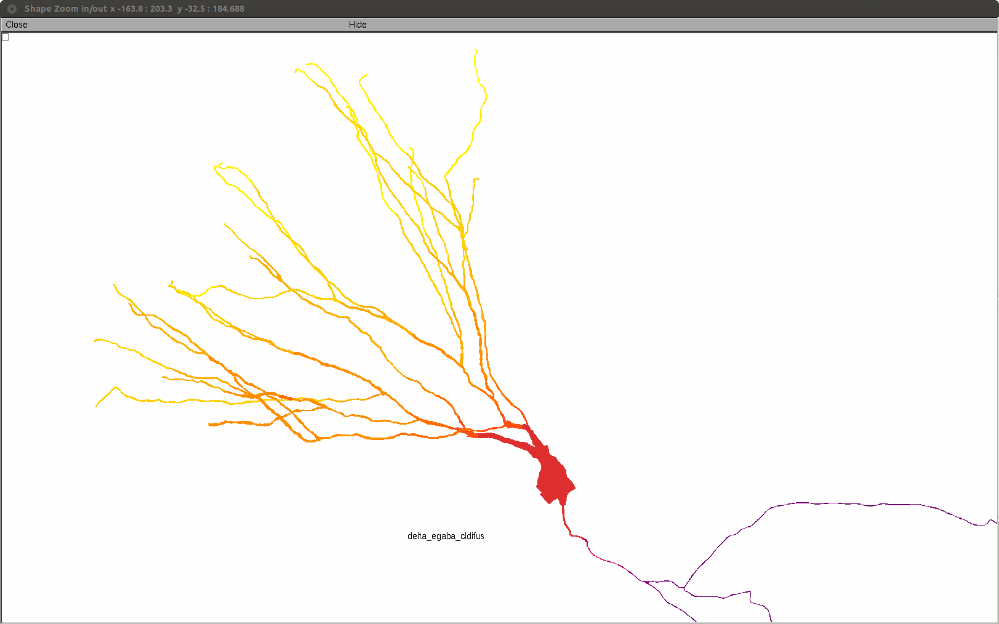

This is the readme for the models associated with the paper
Peter Jedlicka, Thomas Deller, Boris S. Gutkin, Kurt H. Backus (2011)
Activity-dependent intracellular chloride accumulation and diffusion
controls GABAA receptor-mediated synaptic transmission
Hippocampus 21:885-898.
Send bug reports, comments and questions on how to use this model to
jedlicka@em.uni-frankfurt.de/mohapatra@em.uni-frankfurt.de
The code for 8 granule cell morphologies and passive properties was
taken from Schmidt-Hieber et al. 2007:
http://senselab.med.yale.edu/modeldb/ShowModel.asp?model=95960
See their readme file for the description of .hoc files in the ./share
and ./cell_x folders.
Usage:
1. Download and install NEURON (available from
http://www.neuron.yale.edu/neuron/download)
2. Compile the NEURON mod files:
mswin: run mknrndll and select this folder to create the
nrnmech.dll
linux: run nrnivmodl in this folder
mac os x: drag and drop this folder onto mknrndll
3. Start the simulations:
Figure 6 simulation - EGABA shift following activation of
multiple GABAA synapses:
-------------------------------------------------------------
mswin: double click the mosinit.hoc file using windows
explorer
linux: type "nrngui mosinit.hoc" in the shell prompt in this
folder
mac os x: drag and drop the mosinit.hoc file onto the nrngui
icon
To run the simulation click on Init & Run button.
The simulation automatically executes stochastic activation of
multiple dendritic and somatic GABA-A synapses with mean
frequency of 10 Hz/synapse. The simulation starts running and
begins to generate a shape plot of the granule cell, with
colour code indicating EGABA changes. The simulation
reproduces Figure 6A of the paper, but since the synapses are
activated randomly, each run's result is unique. Zooming in
on one of the simulation generated figures should look like:

- Note: Default cell morphology is cell_7. This can be
changed in the ./share/controlpanelGC.hoc file by changing
defaultCellIndex variable (ranging from 0 to 7).
Figure 7 simulation - EGABA shift following activation of a
single GABAA synapse:
---------------------------------------------------------------------
mswin: double click the mosinit_single.hoc file using windows
explorer
linux: type "nrngui mosinit_single.hoc" in the shell prompt in
this folder
mac os x: drag and drop the mosinit_single.hoc file onto the
nrngui icon
To run the simulation click on Init & Run button.
The simulation automatically executes stochastic activation of
a single dendritic GABA-A input with mean frequency of 40
Hz. The simulation starts running and begins to generate a
shape plot of the granule cell, with colour code indicating
EGABA changes.
- Note: Default location of the synapse is in the middle of a
dendrite. This can be changed in the
./init_ClmIPSCs_GC_single.hoc file by setting
DISTAL_SIMULATION = 1 (to move the synapse to the distal end
of the dendrite).
For further simulation parameters please refer to the paper.
Description of mod files:
./cldifus.mod Chloride radial/longitudinal diffusion and
accumulation mechanism with chloride extrusion
mechanism mediating exponential recovery of
intracellular chloride concentration to
resting chloride level.
./cldifus2.mod Chloride radial/longitudinal diffusion and
accumulation mechanism with chloride pump
(Lineweaver-Burke equation) and chloride leak.
Not used in Fig6/7 simulations.
./gabaA_Cl.mod Ohmic synaptic GABAergic mechanism with
dynamic GABA reversal.
./gaghk.mod GHK synaptic GABAergic mechanism with dynamic
GABA reversal. Not used in Fig6/7
simulations.